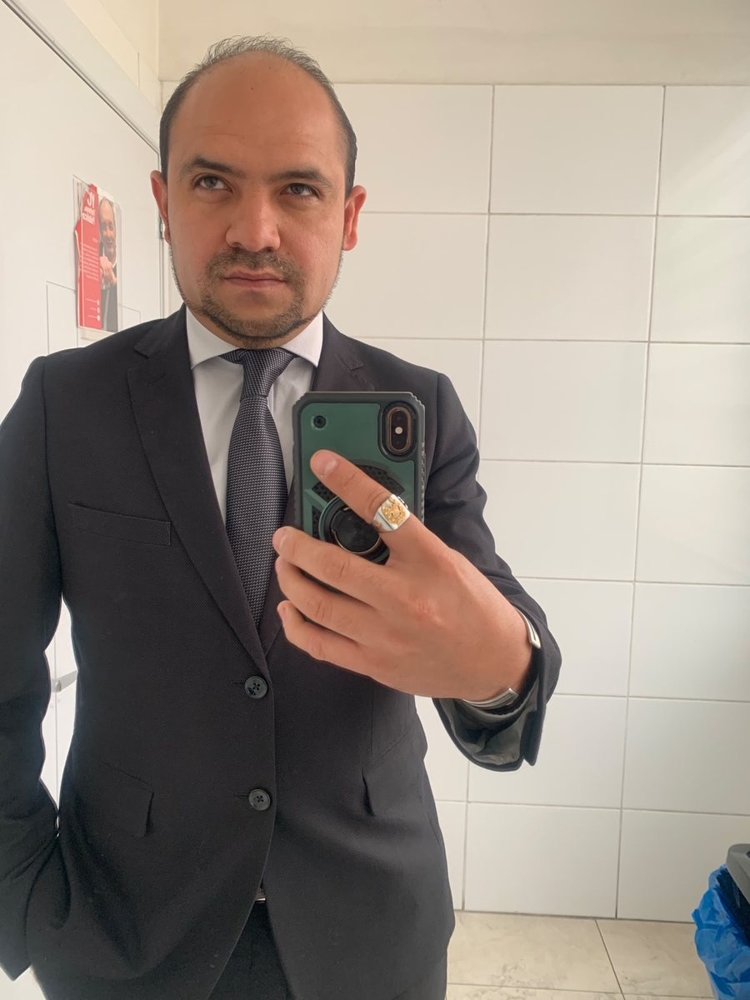
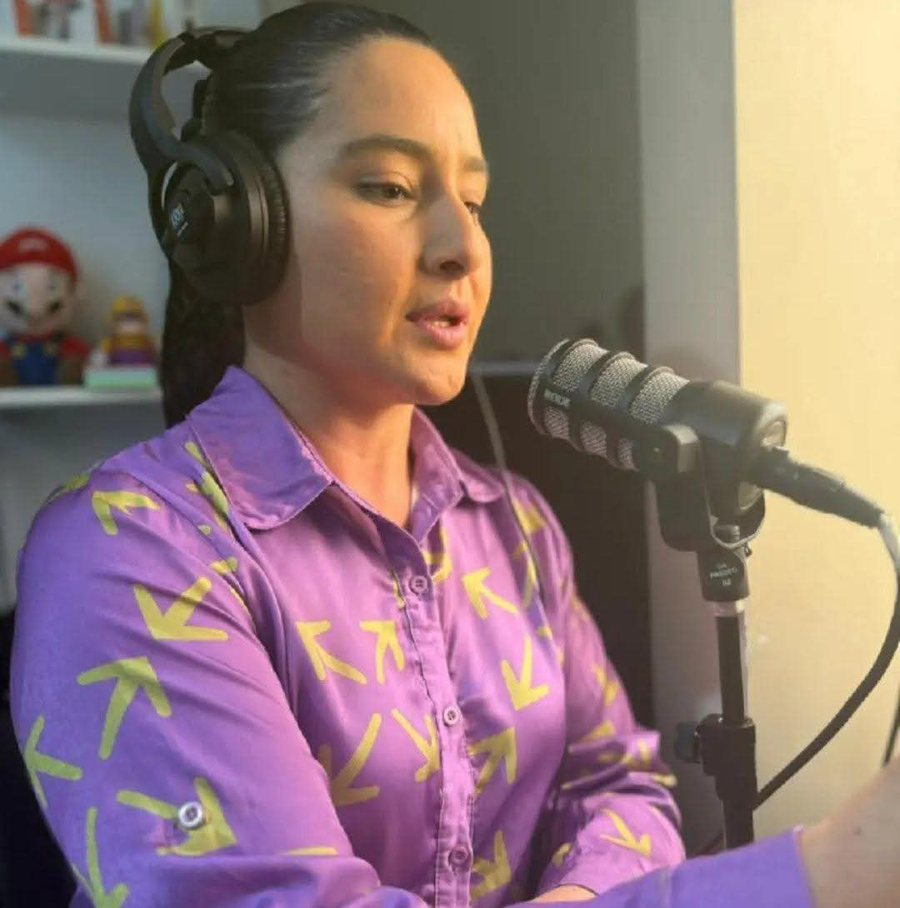
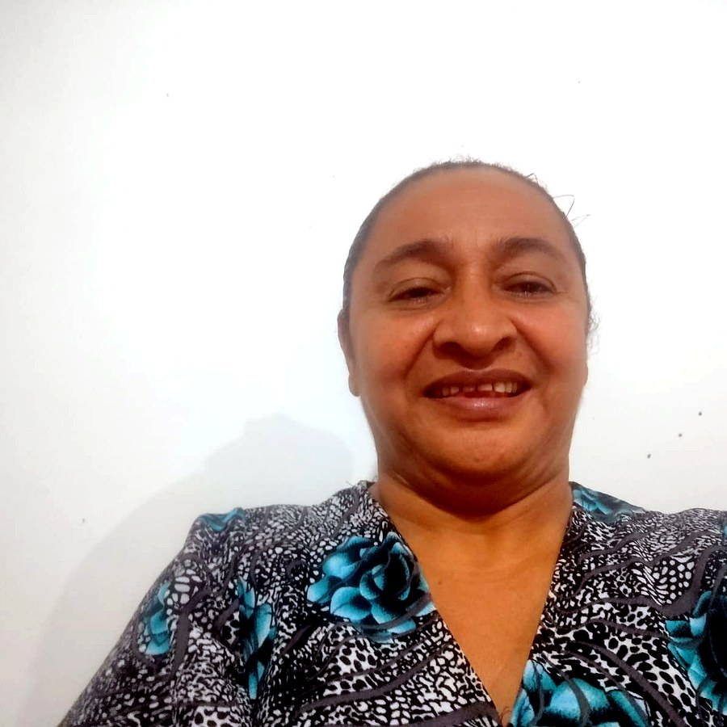
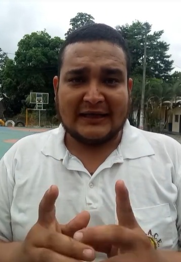

El Oro impulsa el proceso de exportación del banano
Conoce el proceso de producción, selección, empaque y exportación del banano desde El Oro hacia el mundo.
Duración: 4:05 min · 2026Noticiero digital universitario
Noticias, reportajes, redacciones y contenido audiovisual para una nueva generación digital.
Conoce el proceso de producción, selección, empaque y exportación del banano desde El Oro hacia el mundo.
Duración: 4:05 min · 2026Avances de las obras impulsadas para mejorar el suministro de agua potable en sectores del norte de Quito.
Una cobertura cultural sobre talento, identidad y expresión artística en la comunidad.
Video pendiente de cargaVideo institucional
Espacio audiovisual dedicado a presentar a quienes forman parte de Ecuador Informado, sus roles, responsabilidades y aporte dentro del proyecto periodístico digital.

Director general
Responsable de la dirección editorial, coordinación estratégica y supervisión de contenidos periodísticos y audiovisuales de Ecuador Informado, su experiencia fortalece la redacción, el discurso, el análisis de información y la comunicación estratégica del noticiero.

Reportera multimedia
Reportera y locutora apasionada por la narrativa audiovisual y la comunicación digital. Su trabajo se enfoca en la producción de contenido multimedia, cobertura de temas sociales, culturales y comunitarios, así como en la construcción de historias que conectan con la audiencia desde una perspectiva cercana, humana y bien documentada.

Investigación · Redacción · Cobertura periodística
Nicolaza Leonor Villarreal Castro forma parte de Ecuador Informado como una profesional comprometida con la investigación, la redacción y la cobertura periodística responsable, su participación fortalece la construcción de contenidos claros, ordenados y cercanos a la ciudadanía.
Está encargada de la investigación, cobertura periodística, redacción de noticias y producción de contenidos informativos para el portal digital, su labor contribuye a verificar datos, organizar información, contextualizar los hechos y presentar noticias con criterio, sensibilidad social y enfoque ciudadano.
Su perfil aporta rigurosidad, compromiso y una mirada humana a cada historia, impulsando una comunicación que no solo informa, sino que también permite comprender mejor los acontecimientos de la comunidad.

Actualidad · Economía · Interés ciudadano · Cobertura estratégica
Especialista en la cobertura y análisis de acontecimientos de actualidad, economía y temas de interés público. Su trabajo se enfoca en identificar, investigar y comunicar hechos relevantes que influyen en la vida de la ciudadanía, aportando una visión crítica, objetiva y contextualizada.
Su capacidad para interpretar la coyuntura nacional y transformar información compleja en contenidos accesibles fortalece la misión de Ecuador Informado de acercar las noticias a la comunidad de manera clara, responsable y verificada.
Esta sección está destinada a presentar el video de detrás de cámaras del proyecto, junto con reels, fotografías, ensayos, clips de grabación, capturas de edición y material del proceso de producción del noticiero.
El objetivo es mostrar cómo se construye cada noticia desde la planificación, el guion, la redacción, la grabación y la edición final, permitiendo que la audiencia conozca el trabajo previo que sostiene cada producto audiovisual.
Sigue nuestro contenido digital, reportajes, coberturas especiales y detrás de cámaras en nuestra red social oficial.
TikTok Informa